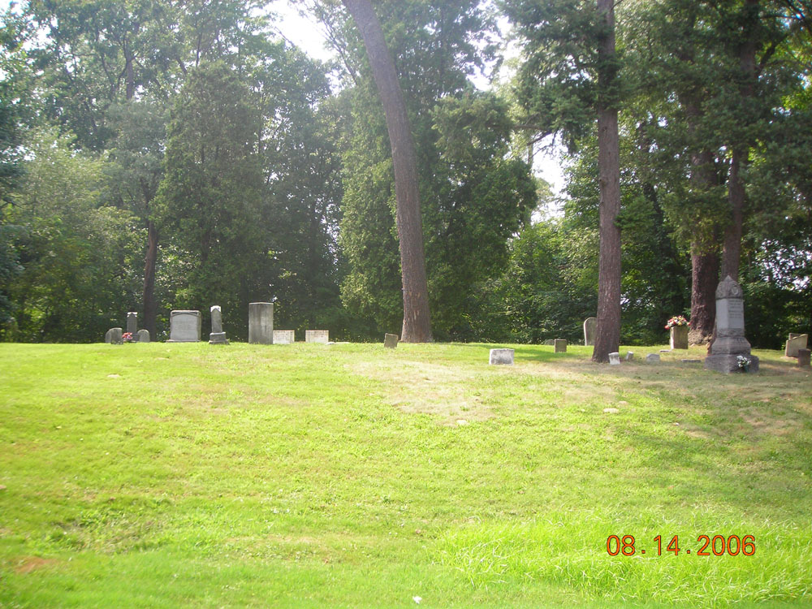
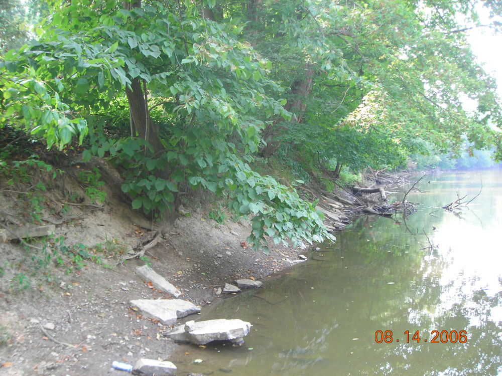

Warren Township Lover's Lane Cemetery

This little graveyard on the river is located between Warren and Leavittsburg. It is said to be haunted by a mysterious "lady in white" who bothers the lovers who come here for the seclusion. Another legend says that spirits were riled up when erosion started pulling their coffins out of the ground and dropping them in the river.
Special thanks to Tom for the photos of this cemetery.

Back